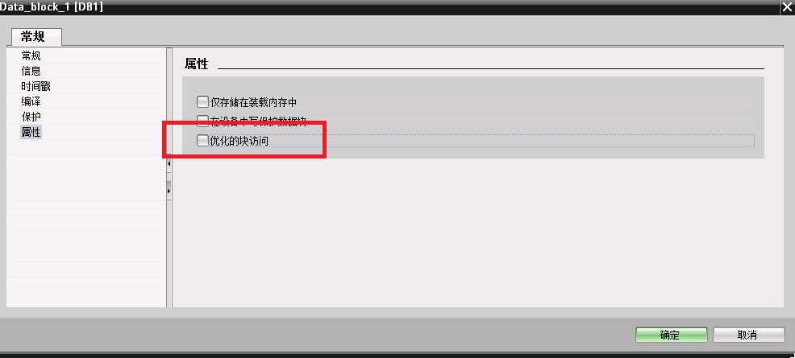
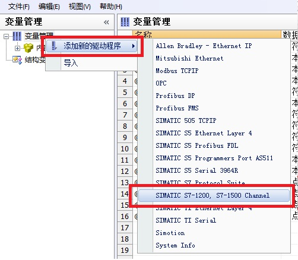
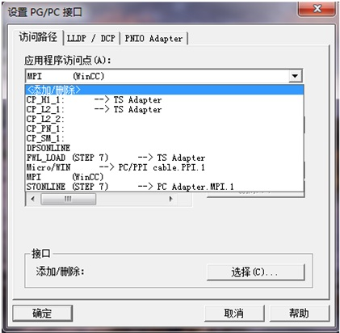
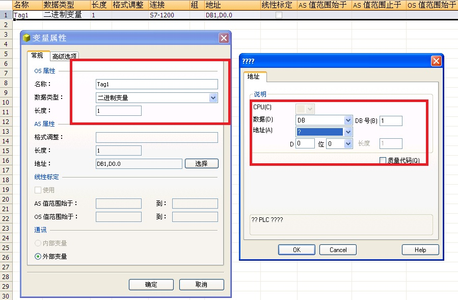

自WinCC V7.2版本起，软件新增加了 "SIMATIC S7-1200, S7-1500 Channel"通道,用于WinCC与 S7-1200/S7-1500 PLC之间的通信。此驱动只支持以太网通讯，使用 TCP/IP 协议。
文档示例的软/硬件环境
硬件：WinCC项目运行的电脑自带普通以太网卡、CPU 1214C
软件：WinCC V7.2 Upd6、Simatic NET V8.2 SP1、Step7 V13（用于组态S7-1200）
在Step7 V13组态软件中打开S7-1200项目，关于PLC硬件组态步骤在此不详述。
注意，如果您使用固件版本为 V4.0 以上的 S7-1200 CPU，则需要如下额外设置，才能保证通信正常。
请点开 CPU 的设备组态，"属性->常规->保护"里"连接机制"一项需要勾选"允许从远程伙伴（PLC\HMI\OPC\...)使用 PUT/GET 通信访问"，如图 1所示：
图1. 连接机制
在树形菜单中打开"设备和网络"，打开网络视图点击CPU 1214C 通讯端口，在"属性"界面中设置通讯参数，在"子网"列表中可把接口连接到某一子网，设置 "IP地址"和"子网掩码"参数。简单通讯情况下，可以不用启用IP路由器，如图 2所示。

图 2. S7-1200通讯参数
打开项目中"程序块"，创建DB块，创建数据，如图 3所示。

图 3. 创建DB块
注意：WinCC需要读写的DB块，不能使用符号寻址，只能使用绝对寻址。所建的DB块属性中需要取消"优化的块访问"，如图 4所示。

图4. DB块属性
编写相应的PLC程序，下载到实际硬件。
在WinCC项目中可添加此驱动，如图 5所示，打开变量管理界面，选择"变量管理"点击鼠标右键，选择"添加新的驱动程序"，在驱动列表中选择"SIMATIC S7-1200, S7-1500 Channel"驱动。

图 5. 添加驱动
在操作系统网络连接中设置此网卡的IP地址以及子网掩码，在此例中，IP地址和PLC的IP地址在同一样网段中，子网掩码一致，如图 6所示。

图 6.网卡参数
在PLC和电脑之间接入以太网通讯电缆，测试电脑与PLC之间物理连接是否正常。选择操作系统左下角"开始"菜单，在最下一行运行栏中输入"CMD"命令，然后敲回车进入DOS命令界面。在界面中输入ping命令，格式：ping <PLC IP地址> 回车。如果物理连接正常如图6所示；如果显示超时或者硬件故障，请检查IP地址设置、网卡驱动以及物理网线。

图 7.测试物理连接
打开电脑的控制面板，选择"设置 PG/PC 接口"选项，在界面中点击"应用程序访问点"下拉列表，选择<添加/删除>，如图 8所示。

图 8. 设置PG/PC 接口
在弹出框中"新建访问点"填写"CP-TCPIP"，点击"添加"按钮添加访问点，如图 9所示，完成后关闭对话框。

图 9.新建访问点
返回"设置 PG/PC 接口"界面，"应用程序访问点"选择"CP-TCPIP"，"为使用的接口分配参数"选择普通以太网卡的TCPIP协议，如图 10所示，完成后点击"确定"退出。

图 10.设置访问点
鼠标右键"SIMATIC S7-1200, S7-1500 Channel"驱动下"OMS+"选项，选择"新建连接"新建与S7-1200 PLC的连接。右键选择连接名称，选择"连接参数"，如图 11所示。

图 11.新建连接
连接参数中，"IP地址"填写PLC通讯端口的IP地址，"访问点"填写"设置 PG/PC接口"中设置的访问点，"产品系列"填写" S7 1200"，如图 12所示。

图 12.连接参数
在新建的连接列表中，创建对应的变量，如图 13所示。

图 13. 创建变量
项目激活后，在变量管理界面可以直接观察到通讯是否建立，绿勾表示通讯建立，如图14所示。通讯建立后在变量管理中组态相对应的变量。

图 14. 变量管理诊断